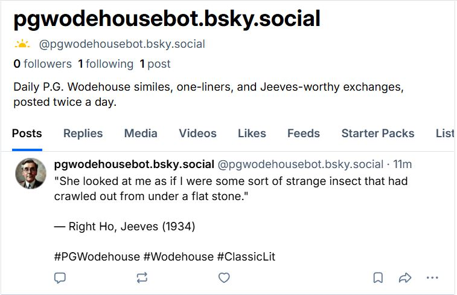

The Idea
P.G. Wodehouse wrote 97 books. He was also, sentence for sentence, one of the funniest writers in the English language. Most people know Jeeves and Bertie Wooster. Fewer know the Blandings Castle stories, the Mulliner tales, or the sheer density of comic simile he packed into every paragraph.
I wanted a bot that would surface this — not randomly, but with some structure. A different flavour each day of the week. The similes on Monday (they're the most shareable). Dialogue exchanges on Wednesday, as a thread. Character spotlights on Thursday. And a wildcard on Sunday for whatever didn't fit anywhere else.
The end result posts to @pgwodehousebot.bsky.social twice daily, runs entirely on GitHub Actions, and costs nothing to operate.
The Stack
No server. No database. No cron daemon. GitHub Actions fires the script twice a day — 7am and 5pm UTC — and the runner exits. The only state is the quotes JSON file checked into the repo.
The Format Rotation
This was the part I spent the most time thinking about. A bot that just dumps quotes gets boring. What made Wodehouse's writing worth returning to was variety — the way a simile lands differently from a dialogue exchange, which lands differently from a narrator's aside.
| Day | Format | What it is |
|---|---|---|
| Monday | Simile | The pure comparison — Wodehouse's signature move |
| Tuesday | Setup + Quote | One line of context, then the killer one-liner |
| Wednesday | Dialogue | A two-post thread — the exchange, then the comeback |
| Thursday | Character Spotlight | Who said it, with context about the speaker |
| Friday | Situation | Scene-setting followed by the payoff |
| Saturday | Simile | Another one — they earn a second slot |
| Sunday | Wildcard | Anything that didn't fit elsewhere |
Wednesday's dialogue format posts as a Bluesky thread — the opening exchange first, then the reply. It mirrors how the jokes actually work in the books: you need both halves.
What a Post Looks Like
Clean, minimal, attributable. Book title and year on every post, so readers can find the source. Hashtags kept to three — enough for discoverability, not enough to be annoying.

The Code
The architecture is four files:
bot.py # entry point — loads quotes, picks one, posts it
scheduler.py # maps day-of-week → format type
templates.py # one render function per format
poster.py # Bluesky client (atproto)bot.py stays intentionally thin — argument parsing, quote loading, and a call to publish(). The format logic lives entirely in templates.py; adding a new format means adding one function and one entry in the scheduler's day-map. The quotes are plain JSON, easy to edit by hand or extend with a script.
For dialogue threads, poster.py sends the first post and passes its uri + cid as the reply reference for the second — the AT Protocol's way of threading:
ref = post_bluesky(post_text)
if reply_text:
post_bluesky(reply_text, reply_ref=ref)Zero-Server Scheduling
The GitHub Actions workflow is eleven lines:
on:
schedule:
- cron: '0 7 * * *' # 07:00 UTC morning
- cron: '0 17 * * *' # 17:00 UTC evening
workflow_dispatch: # manual trigger for testingTwo secrets in the repo settings — BSKY_HANDLE and BSKY_APP_PASSWORD — and the bot is live. No VPS, no always-on process, no bill at the end of the month.
The Bluesky App Password is generated from Bluesky's settings page (separate from the account password, scoped to posting only). If it leaks, you revoke it and generate a new one — the account is untouched.
Vibecoding the Build
Built with Claude Code in a single session. I described the weekly format rotation, the quote data structure, and the threading requirement for dialogues. Claude scaffolded all four files, wrote the atproto posting client, wired up the GitHub Actions workflow, and suggested keeping the JSON schema minimal enough to be hand-edited.
The one decision I made myself was splitting the post into two times a day rather than one. Once you have the infrastructure, the marginal cost of a second daily post is zero — and Wodehouse wrote enough that we won't run short.
Follow Along
The bot is live at @pgwodehousebot.bsky.social. Source is in the Vibecoding repo.
git clone https://github.com/your-username/wodehouse-bot
cd wodehouse-bot
pip install -r requirements.txt
python bot.py --dry-run # preview today's post locally